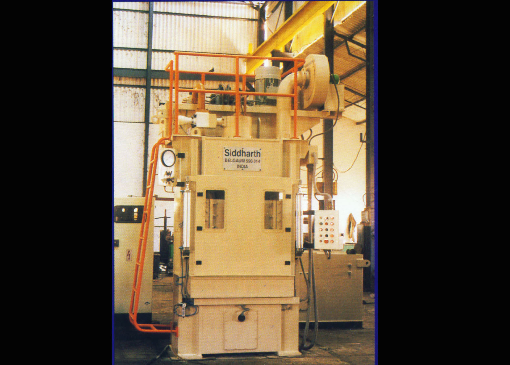
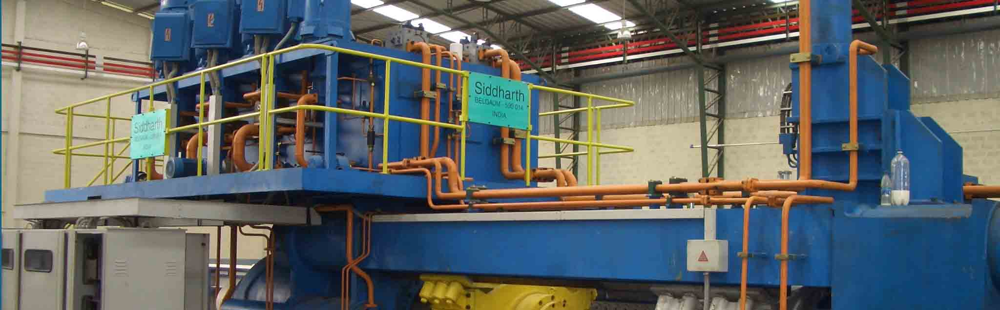

Siddharth Heavy Industries Pvt. Ltd
Formely known as Siddharth Industries
Designed and Manufactured to perfection
Contact Details:-
492/A, Waghawade Road,
Mache, Belgaum- 590 014, INDIA
Phone : +91-831-2411175/71 Mobile : +91-9845273840/+91-9449159911
E-mail : siddhartindus@gmail.com
2250 MT Aluminium Extrusion Press with Hot Log Shear

3000 MT Copper Brass Extrusion Press with Internal Piercer, Underwater Extrusion Arrangement and Dummy Discard Handling System

1600MT Aluminium Extrusion Press with Fixed Dummy & Cassette type Die Station

1250 MT Copper Brass Extrusion Press with Internal Piercer and Mandrel Arrestor System. Internal Piercer Cooling is provided for longevity of the Mandrel

Hot Log Shear

Double Puller

Single Puller

Stretcher

Belt Convoyer

Extrusion1 Press
- FORGED CYLINDER in 2 piece design with forged tube and cast supporting platen.
- PRE-COMPRESSED COLUMN-TENSIONED TIE ROD Design having the following advantages over Simple Tie-Rod Press.
- Quick Pressure Development during Extrusion and Upset operations. Rapid & Smooth De-compression after extrusion
- Minimises/Nullifies displacement of End Platen due to elogation of Tie Rods.
- Minimises/Nullifies Variation in Tie Rod Stresses, thus eliminating 'Fatigue' failures.
- Rigidly of the Press is number of times better than Simple Tie-Rod Press.
- Possibility of Nut Loosening is totally eliminated and hence nut re-tightening /re-adjustments are not required.
- Twisting of End Platen eliminated.
- Alignment is perfectly maintained due to proper location of Parts.
- Provides Solid support to the guides of Container and Moving Cross Head.
- The Tie Rod Sagging due to weight of Container and Moving Cross Head is totally eliminated
- Ensures perfect parallelism between End Platen and Cylinder etc.
Extrusion2 Press
- FORGED CYLINDER in 2 piece design with forged tube and cast supporting platen.
- PRE-COMPRESSED COLUMN-TENSIONED TIE ROD Design having the following advantages over Simple Tie-Rod Press.
- Quick Pressure Development during Extrusion and Upset operations. Rapid & Smooth De-compression after extrusion
- Minimises/Nullifies displacement of End Platen due to elogation of Tie Rods.
- Minimises/Nullifies Variation in Tie Rod Stresses, thus eliminating 'Fatigue' failures.
- Rigidly of the Press is number of times better than Simple Tie-Rod Press.
- Possibility of Nut Loosening is totally eliminated and hence nut re-tightening /re-adjustments are not required.
- Twisting of End Platen eliminated.
- Alignment is perfectly maintained due to proper location of Parts.
- Provides Solid support to the guides of Container and Moving Cross Head.
- The Tie Rod Sagging due to weight of Container and Moving Cross Head is totally eliminated
- Ensures perfect parallelism between End Platen and Cylinder etc.
Deep Drawing Presses in Assembly
Deep Drawing Press with Die Cushion
Quenching Press
Upstroking Moulding Press
Deep Drawing press for LPG Cylinder Halves
Other Presses
Siddharth developed high speed productive presses for Metal Pressing, Metal Drawing, Straightening etc. suitable for Automobile components manufacturers, L.P.G. Gas cylinder manufacturers, Rubber Component manufacturers etc.
The presses are designed by using finite element analysis to meet the acute requirements of the users.
The Deep Drawing Presses are manufactured with Four pre Stretched Tie Rods, Compressed Column Design & Hardened Rams.
The presses are manufactured as per Japanese Industries Standards [JIS-B 6403-1973] The manufacturing range of these presses is of 100 M.T. to 2000 M.T.
-
MANUFACTURERS AND EXPORTERS OF
OIL HYDRAULIC PRESSES & EXTRUSION PLANTS
-
Metal extrusion press and plants
 -
ENHANCING EXTRUSION THROUGH TECHNOLOGY

Infrastructure
Siddharth developed high speed productive presses for Metal Pressing, Metal Drawing, Straightening etc. suitable for Automobile components manufacturers, L.P.G. Gas cylinder manufacturers, Rubber Component manufacturers etc.
The presses are designed by using finite element analysis to meet the acute requirements of the users.
The Deep Drawing Presses are manufactured with Four pre Stretched Tie Rods, Compressed Column Design & Hardened Rams.
The presses are manufactured as per Japanese Industries Standards [JIS-B 6403-1973] The manufacturing range of these presses is of 100 M.T. to 2000 M.T.
-
MANUFACTURERS AND EXPORTERS OF
OIL HYDRAULIC PRESSES & EXTRUSION PLANTS -
Metal extrusion press and plants
-
ENHANCING EXTRUSION THROUGH TECHNOLOGY
Facilities
Siddharth developed high speed productive presses for Metal Pressing, Metal Drawing, Straightening etc. suitable for Automobile components manufacturers, L.P.G. Gas cylinder manufacturers, Rubber Component manufacturers etc.
The presses are designed by using finite element analysis to meet the acute requirements of the users.
The Deep Drawing Presses are manufactured with Four pre Stretched Tie Rods, Compressed Column Design & Hardened Rams.
The presses are manufactured as per Japanese Industries Standards [JIS-B 6403-1973] The manufacturing range of these presses is of 100 M.T. to 2000 M.T.
Our Installations
Siddharth developed high speed productive presses for Metal Pressing, Metal Drawing, Straightening etc. suitable for Automobile components manufacturers, L.P.G. Gas cylinder manufacturers, Rubber Component manufacturers etc.
The presses are designed by using finite element analysis to meet the acute requirements of the users.
The Deep Drawing Presses are manufactured with Four pre Stretched Tie Rods, Compressed Column Design & Hardened Rams.
The presses are manufactured as per Japanese Industries Standards [JIS-B 6403-1973] The manufacturing range of these presses is of 100 M.T. to 2000 M.T.